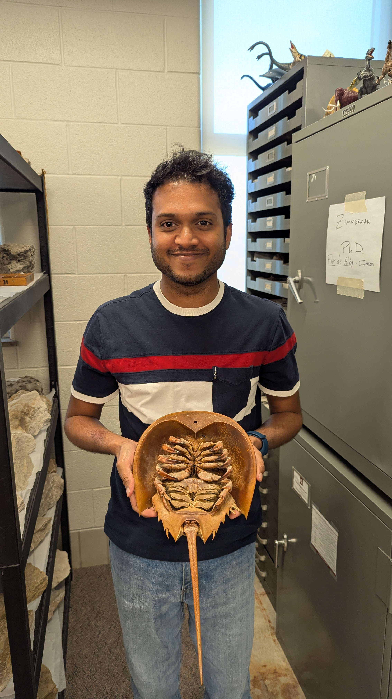

Minindu Mallawa
PhD Student in Geology
Indiana University Bloomington
I am a PhD student in Geology at Indiana University Bloomington, working in sedimentology and stratigraphy. My primary research interest is understanding deposition, erosion, and flocculation of fine-grained sediments like siliciclastic and carbonate clays, silts, and mud in the lab through flume experiments. Thereby,the knowledge can be applied to the field observations of black shales and carbonate deposits worldwide.
About Me
I am a PhD student in Geology at Indiana University Bloomington, advised by Prof. Jürgen Schieber. I'm passionate about the behavior of fine-grained sediments like clays, mud, and silts, trying to understand how they undergo sedimentation and erosion to create sedimentary rocks and structures that we see in the wild.
I am particularly interested in mudstones, shales, and carbonates, which are relatively ubiquitous but often overlooked. Understanding the depositional regimes for these rocks provides insight into geochemistry, sediment reworking, and eco-biology of paleo-ocean basins. One advantage of working in a flume lab allows me to replicate and test the above sedimentary structures and depositional conditions in the lab up to a certain degree.
Research
Bottom Current Activity and Sediment Reworking During Pialli Level (OAE1d) in Western Tethys
In this project, I work with black shale and carbonate samples from Gubbio, Central Italy, to investigate bottom currents as a candidate for punctuated anoxia during Pialli Level deposition in Ocean Anoxic Event-1d (OAE1d). I conduct SEM combined with EDS, petrography, and existing flume data to provide detailed evidence of sediment reworking processes during the anoxic event. This is an ongoing project advised by my advisor, Prof. Juergen Schieber, and Dr. Gabriele Gambacorta from the University of Firenze, Italy.
Flocculation of Fine Grained Sediments
In this project, my research group runs a variety of flume experiments designed specifically to observe fine-grain (up to mud size) flocculation. The experiments are conducted with different salinities, sediment concentrations, durations, and varying flow velocities to understand the critical velocity of sedimentation (CVS) for tested sediments. The project is overseen by my advisor, Prof. Juergen Schieber, and the flume manager, Dr. Zalmai Yawar.
Detailed Sediemntological Analysis on OAE2
In this project, I work with Ocean Anoxic Event 2 (Bonarelli Event) samples from Gubbio, Central Italy, to investigate the depositional and geochemical conditions that existed during deposition of the event. Although OAE2 is considered the "grandfather of all anoxic events," it is not well detailed enough sedimentologically to understand concurrent processes specifically happening at the bottom water layer.
Selected Presentations
Bottom current activity and sediment redistribution during Ocean Anoxic Event 1d revealed from Late Albian black shales and carbonates
SEPM International Sedimentary Geoscience Congress, Colorado School of Mines, 2026
Curriculum Vitae
For a complete overview of my education, research experience, presentations, teaching, and professional activities, please view my curriculum vitae.
View CVContact
Department of Earth and Atmospheric Sciences
Indiana University Bloomington
Indiana, United States